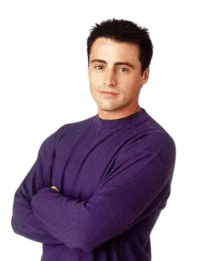
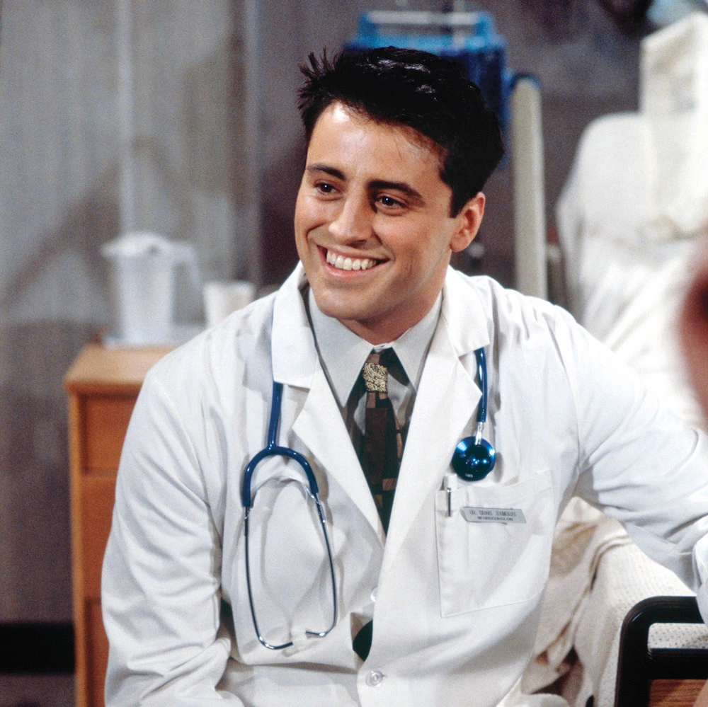

Joey

Full Name
- Joseph Francis Tribbiani Jr.
Day of Birth
- Unknown (probably 1968)
Gender
- Male
Spouses
- None
Main Job
- Actor
Portrayed by
- Matt LeBlanc
The charming womanizer
Joey Tribbiani, portrayed by the Matt LeBlanc, is the epitome of the lovable and charming aspiring actor
among the group of friends. With his striking good looks, magnetic charisma, and a heart of gold beneath his
womanizing facade, Joey effortlessly captures the attention and affection of those around him.
Known for his signature catchphrase, "How you doin'?", Joey's confident and carefree demeanor always brings a
smile to everyone's face. His unwavering optimism and unwavering belief in his own acting abilities provide a constant
source of inspiration and comedic moments throughout the series.
Joey's acting career serves as a rollercoaster ride of triumphs and setbacks, but he never loses sight of his
ultimate dream: Becoming a renowned actor. From his iconic portrayal of Dr. Drake Ramoray on the fictional soap opera
"Days of our Lives" to his pursuit of various acting gigs, Joey's unwavering dedication and passion for his craft are
undeniable.
Behind his sometimes dim-witted persona, Joey possesses a childlike innocence that endears him to his friends and
viewers alike. He cherishes the bond of friendship and is fiercely protective of his close-knit group. Joey's loyalty
knows no bounds, and he is always willing to go the extra mile to support and uplift his friends.
While Joey may be famous for his love of food, particularly pizza and sandwiches, his appetite extends far beyond
the culinary realm. He has an insatiable hunger for life, love, and laughter. Joey's romantic escapades often lead
him down humorous paths, yet he remains a true believer in the power of love.

Joey's infectious laughter and vibrant energy have a way of lighting up any room he enters. With his larger-than-life presence
and natural comedic timing, he often becomes the center of attention, effortlessly entertaining those around him. His physical
comedy and hilarious misunderstandings never fail to leave the audience in stitches.
Beneath his charming exterior, Joey possesses a genuine vulnerability that emerges in moments of emotional depth. From his
heartfelt conversations with his friends to his struggles with self-doubt and setbacks in his acting career, Joey showcases
a sensitive side that resonates with viewers. His journey is a testament to the resilience of the human spirit and the power
of pursuing one's dreams with unwavering determination.
In summary, Joey Tribbiani is a multifaceted character who combines irresistible charm, unwavering optimism, and a magnetic
presence. His infectious laughter, comedic talents, and genuine vulnerability make him an integral part of "Friends". From
his iconic catchphrase to his unwavering loyalty, Joey's journey in love, friendship, and pursuing his acting dreams adds
depth, laughter, and heart to the dynamic group of friends we all know and love.